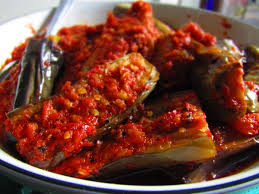

CARA MEMBUAT TERONG BALADO
DAFTAR ISI
BAHAN-BAHAN
langkah-langkah
informasi gizi
 terong balado khas padang
Terong Balado adalah masakan khas Minangkabau (Padang) yang
terkenal dengan cita rasa pedasnya. Hidangan ini terbuat dari terong ungu
yang digoreng hingga layu, kemudian dimasak dengan sambal balado — sambal
merah khas Padang yang dibuat dari cabai, bawang merah, bawang putih, dan
tomat. Rasanya pedas, gurih, dan sedikit manis, cocok disajikan sebagai
lauk pendamping nasi putih hangat, ayam goreng, atau ikan bakar.
bahan bahan:
- 3 buah terong ungu (ukuran sedang), potong memanjang atau serong
- Minyak goreng secukupnya untuk menggoreng
- 10 buah cabai merah keriting
- 5 buah cabai rawit merah (opsional), sesuai selera pedas
- 6 butir bawang merah
- 2 siung bawang putih
- 1 buah tomat merah
- ½ sdt garam
- ½ sdt gula pasir
- ¼ sdt kaldu bubuk (opsional)
- 2 sdm minyak untuk menumis
langkah langkah
- Potong terong sesuai selera, lalu rendam sebentar dalam air garam agar
tidak menghitam. Goreng terong hingga layu dan permukaannya kecokelatan.
Angkat dan tiriskan.
- Haluskan cabai merah, cabai rawit, bawang merah, bawang putih, dan tomat
(boleh diulek kasar atau diblender). Panaskan sedikit minyak,
tumis bumbu halus hingga harum dan matang.
- Tambahkan garam, gula, dan kaldu bubuk. Aduk rata
- Masukkan terong goreng ke dalam sambal. Aduk perlahan hingga sambal merata
dan meresap. Koreksi rasa, angkat jika sudah pas.
- Hidangkan dengan nasi putih hangat. Bisa juga diberi taburan bawang goreng
di atasnya.
tips
Gunakan terong ungu muda agar teksturnya lembut dan tidak pahit.
Jika ingin lebih harum, tambahkan sedikit air jeruk nipis di akhir proses memasak.
Untuk versi lebih ringan, terong bisa dipanggang alih-alih digoreng.
sumber resep
Kunjungi Website
| INFORMASI GIZI |
JUMLAH |
| Kalori |
±180-220 kkal |
| protein |
2-3 gram |
| lemak |
14-18 gram |
| karbohidrat |
15-20 gram |
| serat pangan |
4-5 gram |
| gula alami |
3-4 gram |
| natrium |
250-400 mg |
| kalium |
+350 mg |
| zat besi |
0,8 mg |
| vitamin c |
+10 mg |